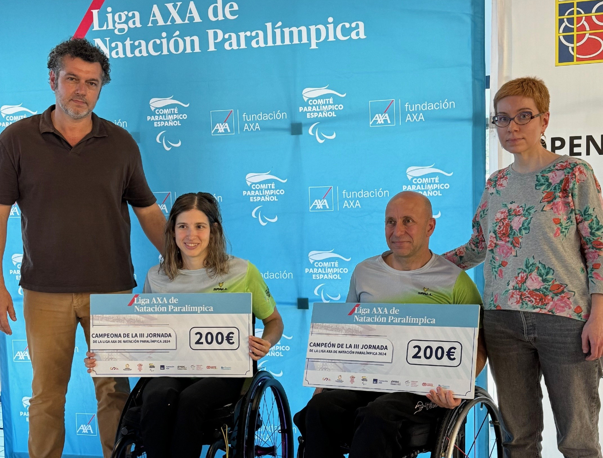
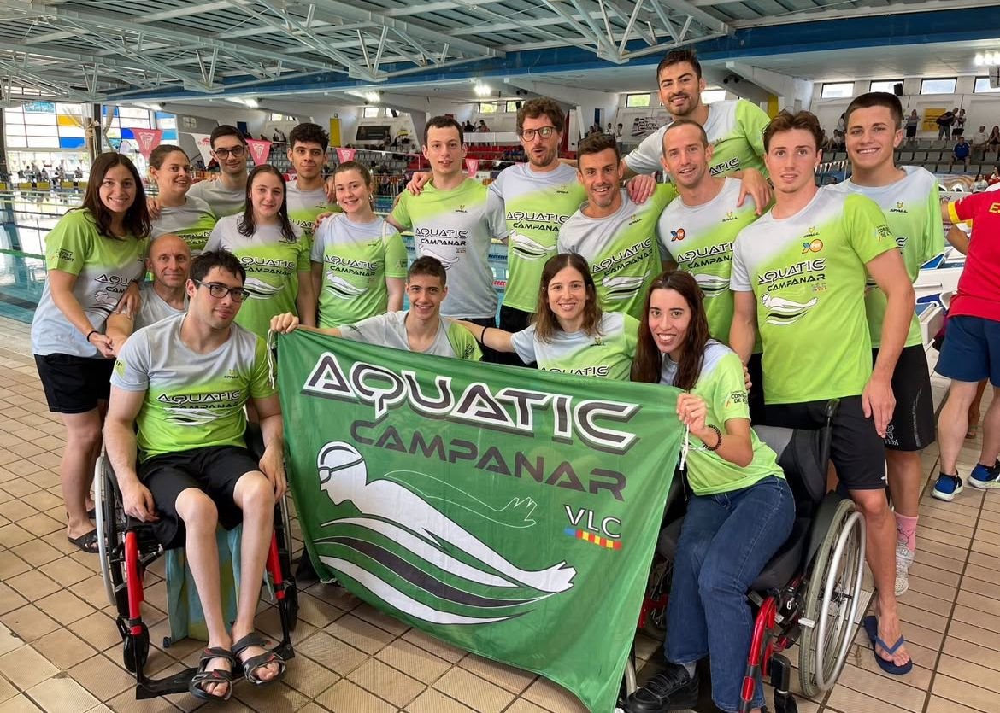
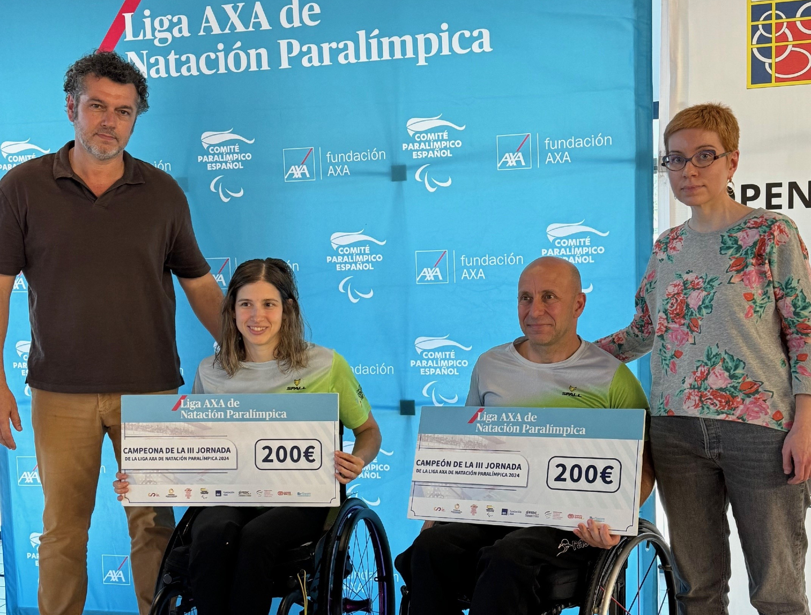
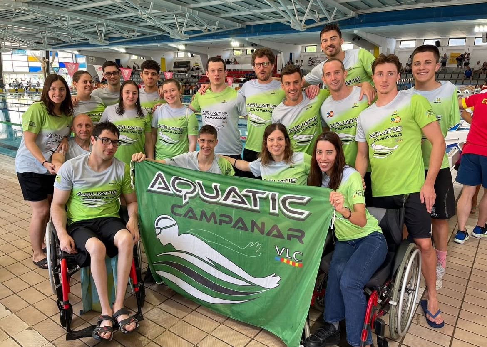

Open CD Aquatic Campanar

Open CD Aquatic Campanar 2025
El Open de Natación Adaptada CD Aquatic Campanar es un evento anual que reúne a nadadores con y sin discapacidad en una jornada dedicada a la inclusión, la superación personal y el deporte de alto nivel. Organizado por el Club Deportivo Aquatic Campanar en colaboración con la Federació d’Esports Adaptats de la Comunitat Valenciana (FESA), este evento se celebra en el Poliesportiu Natzaret de València.
A lo largo de sus ediciones, el Open ha contado con la participación de deportistas de diversas comunidades autónomas, incluyendo clubes como el Club Tritons Vila-real, el Club de Natación Adaptada de Alicante, Club Natación Mediterraneo y el Club Aquarium Alacant. Las competiciones abarcan una amplia gama de pruebas y categorías, permitiendo que nadadores de diferentes niveles y capacidades demuestren su talento y esfuerzo en un ambiente de respeto y compañerismo.
Más allá de la competición, el Open promueve valores fundamentales como la igualdad de oportunidades, la integración y la visibilidad del deporte adaptado. Es una celebración del espíritu deportivo donde cada brazada simboliza el compromiso con una sociedad más inclusiva y diversa.
Este evento no solo destaca por la calidad de sus participantes, sino también por el entusiasmo del público y la dedicación de voluntarios y organizadores que hacen posible esta experiencia única. El Open CD Aquatic Campanar se ha consolidado como una cita imprescindible en el calendario deportivo de València, reflejando el compromiso de la ciudad con el deporte para todos.
Galería Open
 


